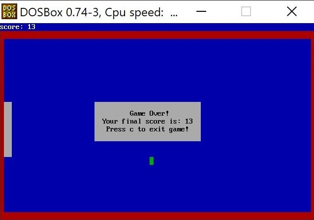
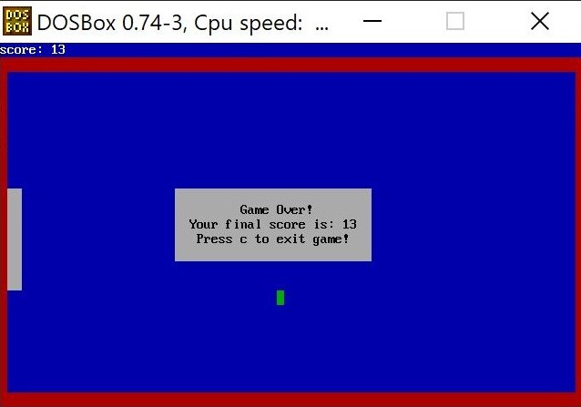

eva.c.nolan00@gmail.com
eva.c.nolan00@gmail.com  github.com/ecnolan
github.com/ecnolan  instagram.com/evachristinaknits
instagram.com/evachristinaknits Analysis of the structure of social networks of online chess websites.
Worked with peer Valentin Scognamillo to look at data from chess games played
on lichess.org. Focus was on evaluating the efficacy of the player-ranking
system used on the side. We then looked into abnormalities in the structure,
particularly communities of high-associativity players, which indicated
players' tendancies to to show preference to a single game type.
We also found that players on long branches have a tendancy to be involved
in ranking-manipulation, and propose that cheating can be found by
investigating play history of users who's nodes fall on the longest shortest paths.
We used python to process our large dataset. We used Cytoscape and Gephi
for our network visualizations.
You can find the full research paper
here.
You can find the project repository on github.


The project focus was to develop alternative techniques for fitting
smoothing splines in the field of dendrochronology. Since 1981, the Cook
& Peters method has been used to fit splines to tree-ring width data to
obtain a spline with a 50% reduction in frequency. Since its development,
smoothing splines have advanced significantly, and we aimed to find a more
computationally efficient and meaningful technique for choosing the
smoothing parameter. We implemented and tested our methods in R, comparing
them against the dplR method currently used by dendrochronologists.
My research partner and I developed two alternative techniques that
achieve aproximately the same level of smoothing, but are more straightforward
in use and have more mathematical meaning. Most importantly, both of our
methods cut out the use of the forier transform, thus we greatly increase
the computational effiency.
We tested our methods on 9 datasets for robustness. Individual datasets have
between 20 and 100 trees, and each tree tends to have 50-150 data points.
Our improved computational efficiency was apparent in our ability to
process that amount of data much faster than the original method could.
Check out the
research poster or read the
full paper.
Coded interactive snake arcade game in assembly language, displayed with memory mapped IO. You can find the project repository on github.
 

Eva Nolan
eva.c.nolan00@gmail.com
github.com/ecnolan
instagram.com/evachristinaknits